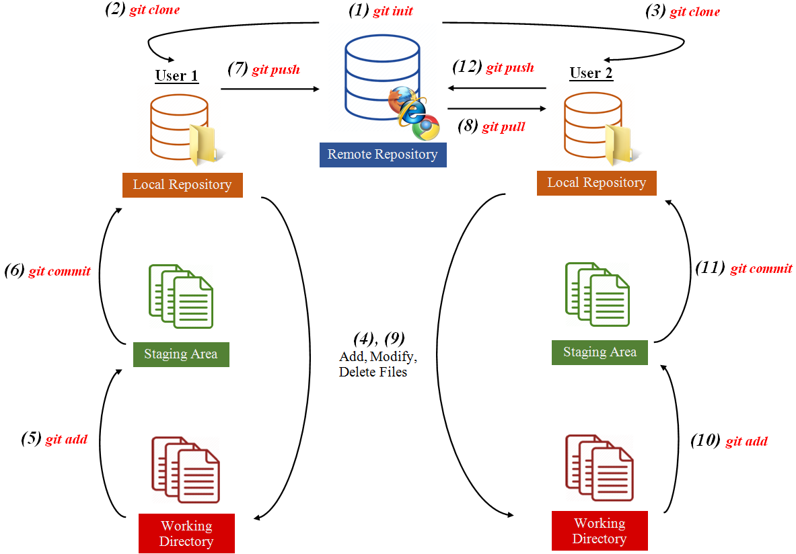

Terminology and Workflow
Glossary of Terms
Git vs. Github
Terminal / Command Line
Repository
Remote vs. Local
Directory (Root, Working Directory)
Staging Area - Collection of files that user wants to save the changes of. Files must first be added to the staging area before their changes can be saved into a commit.
Tracked Files - Files in your working directory that Git saves in its repository and checks to see if changes have been made to them.
Untracked Files - Files in your working directory that are unknown to Git, therefore any changes to these files are not recorded. Any time a user creates a new file, it starts as an untracked file until it is add using
git add.Commit - A collection of saved changes that a user has made. After adding files to the staging area, these changes can actually be saved using
git commit.Commit message - A commit message is a string of characters chosen by the user to label the commit.
Commit hash - A commit hash is a string of automatically-generated alpha-numeric characters that Git uses to identify a commit.
Branch - A branch is a series of commits in a project. Developers usually have multiple branches if they want to maintain different versions of a project. The default branch is called
master.
Background Information
Williamsburg iceland narwhal plaid leggings pickled direct trade portland pork belly. Pour-over jianbing sustainable iceland PBR&B before they sold out umami chambray shabby chic. Cornhole normcore cliche roof party copper mug. +1 chambray iPhone, enamel pin quinoa kogi green juice ugh taxidermy bitters coloring book irony salvia.
Workflow
To get a better idea of how this process might work in its use cases, consider the following series of events that is commonly used with this tool.
Two users want to create a repository, work on some of the files individually, and combine their changes for the final product.
One of the users calls
git initto create the repository.User 1 calls
git cloneto copy the created remote repository so that they can work on their local computer.User 2 also calls
git cloneto copy the created remote repository locally.User 1 starts the progress by adding some files to the repository.
User 1 calls
git addto add these new files to the staging area so that git knows which files should be saved.User 1 calls
git committo save the changes in the staging area into a commit.User 1 calls
git pushto upload their changes from their local computer to the remote repository so both users can see the changes.User 2 calls
git pullto download the changes made from the remote repository to their local computer and works on the latest version of the repository.User 2 edits some of the files and creates their own files.
User 2 calls
git addto include these files in the staging area.User 2 calls
git committo save the changes locally into a commit.User 2 calls
git pushto upload their changes to the remote repository for both users to see.
This workflow is also detailed in the diagram below:
